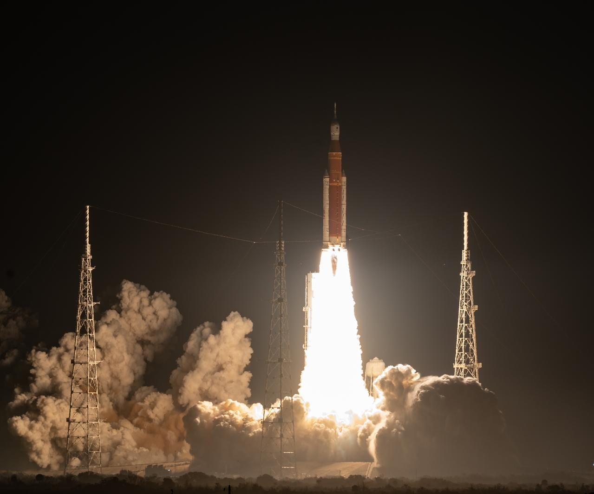

Artemis I: The uncrewed test
In November 2022, NASA launched an uncrewed test flight of the Space Launch System (SLS) rocket and the Orion spacecraft. It was the first time the rocket launched using NASA’s new exploration ground systems.
With no astronauts aboard, engineers could evaluate Orion’s systems without the life support equipment that crewed missions will need.
- Launch
- November 2022
- Crew
- None (uncrewed)
- Vehicles
- SLS rocket and Orion spacecraft
- Status
- Completed